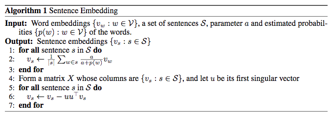

A Simple But Tough-To-Beat Baseline For Sentence Embedding
You can find the paper at ICLR'17.
TL;DR: Word2Vec(CBOW) actually is a weighted average model, using weighted word average as sentence embedding can achieve a good result.
This paper is based on a latent variable generative process which is
in which view the probability of word \(w\) appears at time \(t\) in a sentence given discourse/context vector \(c_t\) is proportional to \(e^{c_t \cdot v_w}\).
The authors claim that the discourse vector \(c_t\) is based on some slow random walk process, they further rewrite the latent variable generative model to
in which \(\widetilde{c}_s=\beta c_0 + (1-\beta)c_s, c_0 \perp c_s\), and \(Z_{\widetilde{c}_s} = \Sigma_{w\in V}\exp(<\widetilde{c}_s, v_w>)\). This shows that a word \(w\) may have a non-zero probability if
- it is related to sentence discourse \(c_s\), or
- term \(\alpha p(w) > 0\), which means it is a frequent word, or
- \(v_w\) is correlated to \(c_0\).
After a few other equations, the final objective function looks like
where \(a = \frac{1-a}{\alpha Z}\).
The algorithm is much simpler than the equations:
